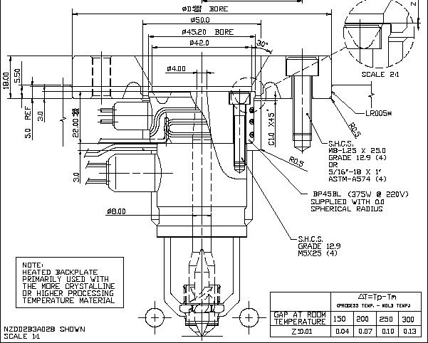
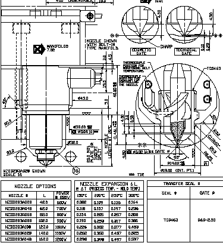

|
Sýcak
Yolluk Sistemi Özellikleri:
- Açýk
Akýþ Kanalý
- Dengeli
Malzeme Akýþý
- Deðiþmeyen
bir Isýl Denge
- Yeterli
Isýtýcý Güç Kapasitesi
- Isýl
Genlemelere karþý gerekli önlemler
- Hýzlý
Renk Deðiþimi


Sýcak
Yolluk Sistemi Avantajlarý:
- Ýþçilikten
tasarruf (yolluk temizleme, kýrma)
- Düþük
çevrim süresi(runner, gate, açma mesafesi)
- Malzemeden
tasarruf
- Makine
kapasitesinden tasarruf
- Yüksek
parça kalitesi ( P,T, kesme gerilmeleri)
Sýcak
Yolluk Sistemi Gereksinimleri:
- Saf
(temiz) plastik kullanýmý
- Hassas
sýcaklýk kontrolu (kapalý çevrim)
- Ýyi
bir kalýp tasarýmý
- Hassas
bir kalýp üretimi
- Dikkatli
bir kalýp bakýmý
Kalýp
Tasarýmý:
- Sýcak
yolluk firmasýnýn önerdiði tasarýma tümü ile uyulmalýdýr.
Ölçü ve toleranslar, hava boþluklarý, sýcak yolluk sisteminin
montajýnda kullanýlacak vida tipi, boyutu, adedi, montaj
yöntemi, sýkma torklarý tamamen sýcak yolluk üreticisinin
tasarýmýna uygun olmalýdýr.
- Kalýp
tasarýmýnda da manifold ve sýcak yolluk memelerindeki
genleþmeler ile boyut deðiþiklikleri ve eksen kaçýklýklarý
olacaðý hesaba katýlarak gerekli boþluklar verilmelidir.
Malzeme:
- Kalýpta
kullanýlan manifold plakasýnýn sertliði minimum 35-42
HRc olmalýdýr.
- Ayrýca
manifold merkezleyicilerinin bastýðý yüzeylerde sertleþtirilmiþ
plakalar (45-50HRc) kullanýlmalýdýr.
- Yolluk
giriþ bölgesindeki kalýp çeliðinin kalitesi en az
1.2344 ve 48-50HRc olmalýdýr.
Soðutma:
- Yolluk
giriþinin karþýsýnda,kalýbýn erkek tarafýnda müstakil
bir soðutma çevrimi kullanýlmalýdýr.
- Valf
giriþler için bu soðutma çevrimi püskürtme tipi spiral
bir soðutma olmalýdýr.
- Kozmetik
parçalarda parça yüzeyinde hale þeklinde izlere (dalgalanmalara)
mani olabilmek için yolluk giriþ ucunun etrafýnda
da ayrý bir soðutma çevrimi dikkate alýnmalýdýr.
Kalýp
Üretimi:
- Yolluk
giriþ bölgesinde EDM iþlemi uygulanmamalý, uygulanýr
ise, çeliðin sertleþip kýrýlganlaþmasýný önleyecek düþük
amperlerin kullanýldýðý parlatma kalitesindeki bir erozyon
iþlemi yapýlmalýdýr.
- Bu
bölge çeliðinde sertleþme yaratabilecek hiç bir nitrürasyon
ve krom kaplama gibi iþlemlerde uygulanmamalýdýr.
- Çok
gözlü kalýplarda yolluk giriþ bölgelerindeki çap derinlik
gibi tüm boyutlarda ölçü farklýlýklarý 0.02 mm yi geçmemelidir.
- Enjeksiyon
yapýlan malzemenin gerektirdiði kalýp sýcaklýðý 400C
nin üzerinde ise kalýbýn baðlantý plakasýnýn üzerinde
bir izolasyon plakasý kullanýlmalýdýr.
- Manifold
plakasýnýn alt kýsmýnda (kalýbýn alt tarafýnda) boþaltma
delik veya kanallarý açýlmalýdýr. Bu sayede herhangi
bir nedenle su veya hidrolik kaçaðýnýn manifold plakasý
içindeki ýsýtma ve ölçme kablolarý ile temasý ve kýsa
devre olasýlýðý azaltýlmýþ olacaktýr.
- Özellikle
çok gözlü kalýplarda kalýbý enjeksiyon makinesinden
sökmeden, yolluk giriþ uclarýna ve sýcak yolluk memelerine
kolayca eriþebilmek için kalýbýn diþi plakasýný erkek
plakasýna sabitleyebilecek bir kilit sistemi öngörülmelidir.
Sýcak
Yolluklu Kalýplarýn Çalýþtýrýlmasý
Enjeksiyon makinesine baðlamadan önce:
- Sýcak
yolluk sistemindeki her sýcak yolluk memesi ve her manifold
bölgesi için "Sýcaklýk Kontrol Cihazýn" da ayrý bir sýcaklýk
kontrol kartý kullanýlmalýdýr.
- Kalýbý
prese baðlamadan önce tüm ýsýtýcý ve sýcaklýk ölçerlerin,
kablo baðlantýlarýnda kopukluk ve kýsa devre olmadýðý kontrol
edilmelidir.
- Sýcak
yolluk sisteminin, "sýcaklýk kontrol cihazý" ile bir ön
ýsýtmaya tabii tutulmasý önerilir.
- Isýtýcý
resistanslarýnda kopukluk olmadýðý daima ohmmetre ile kontrol
edilmeli.
- Isýtýcýnýn
ohm deðeri, Mold-Masters'ýn teknik resminden kontrol edilmeli.
- Isýtýcý
tel ile toprak arasýnda hiç bir ohm deðeri okunmamalý.
- Nem
almýþ ýsýtýcýlarda Megaohm deðerleri (250 Kohm - 10 Mohm)görülebilir.
Bu durumda ýsýtýcýlar kurutulana kadar 100-120C arasýnda
ýsýtýlmalýdýr.
- Ýzolasyonun
resistansý 250 Kohm deðerinin altýnda ise ýsýtýcýya hiç
bir zaman tüm güç uygulanmamalýdýr.
- Sýcaklýk
ölçer kablolarýnýn "+" ve "-" uclarý ohmmetre ile kontrol
edilmeli.
- Sýcaklýk
ölçerin ucuna ýsý uygulandýðýnda ohmmetre ibresi hareket
etmiyor ise sýcaklýk ölçer deðiþtirilmeli.
- Sýcaklýk
ölçerin uzunluðuna göre ohmmetre de 9 ila 25 ohm arasýndaki
deðerler okunmalýdýr.
- Daima
"Soft Start" özelliði olan Sýcaklýk Kontrol Cihazý kullanýlmalý.
- Hiç
bir zaman yüzdelik li (açýk çevrimli) sýcaklýk kontrolu
kullanýlmamalýdýr.
- Enjeksiyondan
önce sýcak yolluk sisteminin ýsýtýcý planýndan, bölge numaralarýna
göre hangi sýcak yolluk memesinin hangi kalýp bölgesinde
olduðundan ve sýcaklýk kontrol cihazýnýn hangi ýsýtýcý bölgesine
baðlý olduðundan emin olunmalýdýr.
- Isýtýcý
baðlantý þemasý, kalýpla birlikte makineye gitmelidir (Standart
þema+könnektör).
|